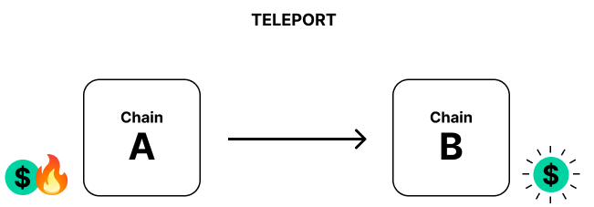

<!DOCTYPE html>
<html lang="en">

<head>
  <meta charset="utf-8" />
  <meta name="viewport" content="width=device-width, initial-scale=1.0, maximum-scale=1.0, user-scalable=no" />

  <title>XCVM</title>
  <link rel="icon" href="./../../../assets/favicon.svg" />
  <link rel="shortcut icon" href="./../../../assets/favicon.png" />
  <link rel="stylesheet" href="./../../../dist/reset.css" />
  <link rel="stylesheet" href="./../../../dist/reveal.css" />
  <link rel="stylesheet" href="./../../.././assets/styles/PBA-theme.css" id="theme" />
  <link rel="stylesheet" href="./../../../css/highlight/shades-of-purple.css" />

  <link rel="stylesheet" href="./../../.././assets/styles/custom-classes.css" />

</head>

<body class="site">
  <header class="site-header">
    <!-- This logo is a link only on the watching server, not the production build -->
    <a href="">
      
    </a>
  </header>
  <main class="reveal">
    <article class="slides">
      <section  data-markdown><script type="text/template">

# XCVM
</script></section><section  data-markdown><script type="text/template">
# 🫀 The XCVM

At the core of XCM lies the **Cross-Consensus Virtual Machine (XCVM)**.

A “message” in XCM is an XCVM program, which is a sequence of instructions.

The XCVM is a state machine, state is kept track in **registers**.

<aside class="notes"><p>It’s an ultra-high level non-Turing-complete computer.
Messages are one or more XCM instructions.
The program executes until it either runs to the end or hits an error, at which point it finishes up and halts.
An XCM executor following the XCVM specification is provided by Parity, and it can be extended or customized, or even ignored altogether and users can create their own construct that follows the XCVM spec.</p>
</aside></script></section><section ><section data-markdown><script type="text/template">
# XCVM Registers

<diagram class="mermaid">
graph LR
    subgraph Registers[ ]
        Holding(Holding)
        Origin(Origin)
        More(...)
    end
</diagram>

<aside class="notes"><p>Registers <em>are</em> the state of XCVM.
Note that they are temporary/transient.
We&#39;ll talk about are the <code>holding</code> and <code>origin</code> registers, but there are more.</p>
</aside></script></section><section data-markdown><script type="text/template">
## 📍 The Origin Register

Contains an `Option<Location>` of the cross-consensus origin where the message originated from.

<aside class="notes"><p>This <code>Location</code> can change over the course of program execution.</p>
<p>It might be <code>None</code> because some instructions clear the origin register.</p>
</aside></script></section><section data-markdown><script type="text/template">
### 💸 The Holding Register

Expresses a number of assets in control of the xcm execution that have no on-chain representation.

They don't belong to any account.

It can be seen as the register holding "unspent assets".
</script></section></section><section ><section data-markdown><script type="text/template">
# 📜 XCVM Instructions

XCVM Instructions might change a register, they might change the state of the consensus system or both.
</script></section><section data-markdown><script type="text/template">
## Kinds of instructions

<pba-flex center>

- Command
- Trusted Indication
- Information
- System Notification
</script></section><section data-markdown><script type="text/template">
## Example: WithdrawAsset

An instruction used to get assets from an account and put them into the holding register.

<pba-flex center>

```rust
WithdrawAsset(Assets)
```

<aside class="notes"><p>This instruction is a command.
It takes the assets from the account specified in the origin register and puts them in the holding register.</p>
</aside></script></section><section data-markdown><script type="text/template">
## Example: ReceiveTeleportedAsset

<pba-flex center>

Used for teleporting assets between two systems.

```rust
ReceiveTeleportedAsset(Assets)
```

<aside class="notes"><p>This instruction is a trusted indication.
It tells the receiver that the sender has burnt some assets and they should be minted here.
This is used for teleports, which we&#39;ll look into in the next lecture.
A lot of trust is needed between both systems.</p>
</aside></script></section><section data-markdown><script type="text/template">
## Example: QueryResponse

Used for reporting information back to another system.

<pba-flex center>

```rust
QueryResponse {
    #[codec(compact)]
    query_id: QueryId,
    response: Response,
    max_weight: Weight,
    querier: Option<Location>,
}
```

<aside class="notes"><p>This instruction is reporting back information.
Different things can be reported, like a certain pallet, the result of an operation, etc.</p>
</aside></script></section></section><section ><section data-markdown><script type="text/template">
# Basic XCVM Operation <!-- Presenting the example program -->

<diagram class="mermaid">
graph LR
    subgraph Program
        direction LR
        WithdrawAsset-->BuyExecution
        BuyExecution-->DepositAsset
    end
</diagram>

<aside class="notes"><p>Here we have a very simple program, which if executed locally would result in a regular asset transfer within a single consensus system.</p>
</aside></script></section><section data-markdown><script type="text/template">
## XCVM Operation <!-- Fetching WithdrawAsset instruction -->

<diagram class="mermaid">
graph LR
    subgraph Program
        WithdrawAsset-->BuyExecution:::disabled
        BuyExecution-->DepositAsset:::disabled
    end
    Executor(Executor)--"Fetch"-->WithdrawAsset
    subgraph Registers
        Origin(Origin)
        Holding(Holding)
    end
    Registers-.-Executor
    linkStyle 0 opacity:0.3
    linkStyle 1 opacity:0.3
    classDef disabled opacity:0.3
</diagram>

<aside class="notes"><p>The XCVM, or executor, fetches instruction from the program and executes them one by one.
It starts with the <code>WithdrawAsset</code> instruction, which loads the holding register using assets from the location specified in the origin register.</p>
</aside></script></section><section data-markdown><script type="text/template">
## XCVM Operation <!-- Getting assets from Location specified by the Origin register -->

<diagram class="mermaid">
graph LR
    subgraph Program
        WithdrawAsset-->BuyExecution:::disabled
        BuyExecution-->DepositAsset:::disabled
    end
    Executor(Executor)--"Fetch"-->WithdrawAsset
    Executor--"Get assets"-->Origin
    subgraph Registers
        Origin(Origin)
        Holding(Holding)
    end
    Registers-.-Executor
    linkStyle 0 opacity:0.3
    linkStyle 1 opacity:0.3
    classDef disabled opacity:0.3
</diagram>
</script></section><section data-markdown><script type="text/template">
## XCVM Operation <!-- Putting assets in Holding register -->

<diagram class="mermaid">
graph LR
    subgraph Program
        WithdrawAsset-->BuyExecution:::disabled
        BuyExecution-->DepositAsset:::disabled
    end
    Executor(Executor)--"Fetch"-->WithdrawAsset
    Executor--"Put assets"-->Holding
    subgraph Registers
        Origin(Origin)
        Holding(Holding)
    end
    Registers-.-Executor
    linkStyle 0 opacity:0.3
    linkStyle 1 opacity:0.3
    classDef disabled opacity:0.3
</diagram>
</script></section><section data-markdown><script type="text/template">
## XCVM Operation <!-- Fetching BuyExecution instruction -->

<diagram class="mermaid">
graph LR
    subgraph Program
        WithdrawAsset:::disabled-->BuyExecution
        BuyExecution-->DepositAsset:::disabled
        DepositAsset
    end
    Executor(Executor)--"Fetch"-->BuyExecution
    linkStyle 0 opacity:0.3
    linkStyle 1 opacity:0.3
    classDef disabled opacity:0.3
</diagram>
</script></section><section data-markdown><script type="text/template">
## XCVM Operation

<diagram class="mermaid"> <!-- Fetching DepositAsset instruction -->
graph LR
subgraph Program
WithdrawAsset:::disabled-->BuyExecution:::disabled
BuyExecution-->DepositAsset
DepositAsset
end
Executor(Executor)--"Fetch"-->DepositAsset
subgraph Registers
Holding(Holding)
Origin(Origin)
end
Registers-.-Executor
linkStyle 0 opacity:0.3
linkStyle 1 opacity:0.3
classDef disabled opacity:0.3
</diagram>
</script></section><section data-markdown><script type="text/template">
## XCVM Operation

<diagram class="mermaid"> <!-- Getting assets from Holding register -->
graph LR
subgraph Program
WithdrawAsset:::disabled-->BuyExecution:::disabled
BuyExecution-->DepositAsset
DepositAsset
end
Executor(Executor)--"Fetch"-->DepositAsset
subgraph Registers
Holding(Holding)
Origin(Origin)
end
Registers-.-Executor
Executor--"Get assets"-->Holding
linkStyle 0 opacity:0.3
linkStyle 1 opacity:0.3
classDef disabled opacity:0.3
</diagram>
</script></section><section data-markdown><script type="text/template">
## XCVM Operation

<diagram class="mermaid"> <!-- Putting assets in Location specified by the Origin register -->
graph LR
subgraph Program
WithdrawAsset:::disabled-->BuyExecution:::disabled
BuyExecution-->DepositAsset
DepositAsset
end
Executor(Executor)--"Fetch"-->DepositAsset
subgraph Registers
Holding(Holding)
Origin(Origin)
end
Registers-.-Executor
Executor--"Put assets"-->Origin
linkStyle 0 opacity:0.3
linkStyle 1 opacity:0.3
classDef disabled opacity:0.3

</diagram>
</script></section><section data-markdown><script type="text/template">
## XCVM vs. Standard State Machine

<pba-flex center>

1. Error _handler_ register
2. Appendix register

<aside class="notes"><ol>
<li>Code that is run in the case where the XCM program fails or errors.
Regardless of the result, when the program completes, the error handler register is cleared.
This ensures that error handling logic from a previous program does not affect any appended code (i.e. the code in the error handler register does not loop infinitely, the code in the Appendix register cannot access the result of the code execution in the error handler).</li>
<li>Code that is run regardless of the execution result of the XCM program.</li>
</ol>
</aside></script></section></section><section ><section data-markdown><script type="text/template">
## Reanchoring

How do different locations reference the same asset?

<diagram class="mermaid limit size-70">
graph TD
    Polkadot(Polkadot)-->AssetHub("Asset Hub (1000)")
    Polkadot-->BridgeHub("Bridge Hub (1002)")
    AssetHub-->Alice(Alice)
    AssetHub-->AssetsPallet(Pallet Assets)
    AssetsPallet-->Asset(USDT)
</diagram>

<aside class="notes"><p>Locations are relative, so they must be updated and rewritten when sent to another chain, for them to be interpreted correctly.</p>
<p>Native tokens are referenced by the location to their system.</p>
</aside></script></section><section data-markdown><script type="text/template">
### USDT from Asset Hub

`PalletInstance(50)/GeneralIndex(1984)`

<diagram class="mermaid limit size-70">
graph TD
    Polkadot(Polkadot):::disabled-->AssetHub("📍 Asset Hub (1000)")
    Polkadot-->BridgeHub("Bridge Hub (1002)"):::disabled
    AssetHub-->Alice(Alice):::disabled
    AssetHub-->AssetsPallet(Pallet Assets)
    AssetsPallet-->Asset(USDT)
    linkStyle 0 opacity:0.3
    linkStyle 1 opacity:0.3
    linkStyle 2 opacity:0.3
    classDef disabled opacity:0.3
</diagram>
</script></section><section data-markdown><script type="text/template">
### USDT from Bridge Hub

`../Parachain(1000)/PalletInstance(50)/GeneralIndex(1984)`

<diagram class="mermaid limit size-70">
graph TD
    Polkadot(Polkadot)-->AssetHub("Asset Hub (1000)")
    Polkadot-->BridgeHub("📍 Bridge Hub (1002)")
    AssetHub-->Alice(Alice):::disabled
    AssetHub-->AssetsPallet(Pallet Assets)
    AssetsPallet-->Asset(USDT)
    BridgeHub-->Polkadot
    linkStyle 1 opacity:0.3
    linkStyle 2 opacity:0.3
    linkStyle 5 stroke-dasharray:5
    classDef disabled opacity:0.3
</diagram>
</script></section><section data-markdown><script type="text/template">
### Reanchoring to the rescue

<diagram class="mermaid">
graph LR
    subgraph OutgoingMessage[Outgoing message from Bridge Hub]
        USDTBridgeHub(USDT from Bridge Hub's perspective)
    end
    USDTBridgeHub--Reanchoring-->USDTAssetHub
    subgraph IncomingMessage[Incoming message in Asset Hub]
        USDTAssetHub(USDT from Asset Hub's perspective)
    end
</diagram>
</script></section></section><section ><section data-markdown><script type="text/template">
## 🤹 Cross-consensus transfers

<aside class="notes"><p>The two ways of transferring assets between consensus systems are teleports and reserve transfers.</p>
</aside></script></section><section data-markdown><script type="text/template">
### 1. Asset teleportation



<aside class="notes"><p>Teleportation works by burning the assets on the source chain and minting them on the destination chain.
This method is the simplest one, but requires a lot of trust, since failure to burn or mint on either side will affect the total issuance.</p>
</aside></script></section><section data-markdown><script type="text/template">
### 1.1. Example: System parachains?

<diagram class="mermaid">
graph LR
    BridgeHub(Bridge Hub)--"Trust"-->AssetHub(Asset Hub)
</diagram>
</script></section><section data-markdown><script type="text/template">
### 1.2. Example: Polkadot and Kusama?

<diagram class="mermaid">
graph LR
    Polkadot(Polkadot)--"No trust"-->Kusama(Kusama)
</diagram>
</script></section><section data-markdown><script type="text/template">
### 2. Reserve asset transfers


<aside class="notes"><p>Reserve asset transfers are more complicated, since they bring in a third actor called the reserve chain.
Chain A and B needn&#39;t trust each other, they only need to trust the reserve chain.
The reserve chain holds the real assets, A and B deal only with derivatives.
The transfer is made by burning derivatives from A, moving them from A&#39;s SA to B&#39;s SA in R, then minting on B.</p>
<p>In some cases, the sender, A, can also be the reserve for a particular asset, in which case the process is simplified, there&#39;s no burning of derivatives.
This usually happens with parachains&#39; native tokens.</p>
<p>You always trust the issuer of the token to not mint infinite tokens.</p>
</aside></script></section><section data-markdown><script type="text/template">
### 2.1. Example: Parachain native tokens

<diagram class="mermaid">
graph LR
    subgraph A [A = R]
        Sender(Sender account)--"Move X real asset"-->BSovereignAccount(B's Sovereign Account)
    end
    A--"Mint X derivatives"-->B(B)
</diagram>

<aside class="notes"><p>Most parachains act as the reserve for their own token.
To transfer their token to other chains, they move the real assets to a sovereign account and then tell the chain to mint equivalent derivatives.</p>
</aside></script></section><section data-markdown><script type="text/template">
### 2.2. Example: Polkadot to Kusama

<diagram class="mermaid">
graph LR
    Polkadot(Polkadot)-->AssetHubP
    subgraph AssetHubP [Asset Hub Polkadot]
        Sender(Sender account)--"Move X real DOT"-->KusamaSovereignAccount("Kusama's sovereign account")
    end
    AssetHubP--"Mint X DOT derivatives"-->Kusama(Kusama)
</diagram>

<aside class="notes"><p>AssetHub Kusama acts as the reserve for KSM.
Kusama doesn&#39;t trust Polkadot to teleport KSM to it, but it does trust its own reserve, the AssetHub.
Polkadot has a sovereign account in Kusama&#39;s AssetHub with some amount of KSM.
Whenever some user in Polkadot wants to get KSM on Kusama, they just give the DOT to Polkadot and the KSM are moved from one sovereign account to another.
No new trust relationships are added.</p>
</aside></script></section></section><section ><section data-markdown><script type="text/template">
# 💁 XCM by example
</script></section><section data-markdown><script type="text/template">
## The `WithdrawAsset` instruction

<pba-flex center>

```rust
enum Instruction {
    /* snip */
    WithdrawAsset(Assets),
    /* snip */
}
```

<aside class="notes"><p>There are a number of instructions
which place assets on the Holding Register.
One very simple one is the
<code>WithdrawAsset</code> instruction.</p>
<p>It withdraws some assets from the account of the location specified in the Origin Register.
But what does it do with them?
If they don’t get deposited anywhere then it&#39;s a pretty useless operation.
These assets are held in the holding register until something is done with them, for example, using the following instruction.</p>
</aside></script></section><section data-markdown><script type="text/template">
## The `BuyExecution` instruction

<pba-flex center>

```rust
enum Instruction {
    /* snip */
    BuyExecution {
        fees: Asset,
        weight_limit: WeightLimit,
    },
    /* snip */
}
```

<aside class="notes"><p>This instruction uses the specified assets in the Holding register to buy weight for the execution of the following instructions.
It&#39;s used in systems that pay fees.</p>
<p><code>weight_limit</code> is a sanity check, to make sure that the execution errors if you would buy more than that weight.
The estimate for the weight has to come from using the recipient&#39;s weigher, not the sender&#39;s.
The recipient is the one who actually executes the message.</p>
</aside></script></section><section data-markdown><script type="text/template">
## The `DepositAsset` instruction

<pba-flex center>

```rust
enum Instruction {
    /* snip */
    DepositAsset {
        assets: AssetFilter,
        beneficiary: Location,
    },
    /* snip */
}
```

<aside class="notes"><p>Takes assets from the holding register and deposits them in a beneficiary.
Typically an instruction that places assets into the holding register would have been executed previously.</p>
</aside></script></section><section data-markdown><script type="text/template">
## Putting it all together

<pba-flex center>

```rust
Xcm(vec![
    WithdrawAsset((Here, amount).into()),
    BuyExecution {
        fees: (Here, amount).into(),
        weight_limit: Limited(sanity_check_weight_limit)
    },
    DepositAsset { assets: All.into(), beneficiary: AccountId32 { ... }.into() },
])
```

<aside class="notes"><p>All examples in these slides use the latest xcm version.</p>
</aside></script></section><section data-markdown><script type="text/template">
## Good pattern

<pba-flex center>

```rust
Xcm(vec![
    WithdrawAsset((Here, amount).into()),
    BuyExecution {
        fees: (Here, amount).into(),
        weight_limit: Limited(sanity_check_weight_limit)
    },
    DepositAsset { assets: All.into(), beneficiary: AccountId32 { ... }.into() },
    RefundSurplus,
    DepositAsset { assets: All.into(), beneficiary: sender }
])
```
</script></section></section><section ><section data-markdown><script type="text/template">
# Reserve asset transfer

<pba-flex center>

```rust
Xcm(vec![
    WithdrawAsset(asset),
    InitiateReserveWithdraw {
        assets: All.into(),
        reserve: reserve_location,
        xcm: /* ...what to do with the funds in the reserve... */,
    },
])
```

<aside class="notes"><p>This message is executed locally.
Then, a message is sent to the <code>reserve</code> location.
That message contains the custom <code>xcm</code> provided along with other instructions.</p>
</aside></script></section><section data-markdown><script type="text/template">
## Message received in reserve

<pba-flex center>

```rust
Xcm(vec![
    WithdrawAsset(reanchored_asset),
    ClearOrigin, // <- Why is this needed?
    /* ...custom instructions... */
])
```

<aside class="notes"><p>This is the message the reserve receives.</p>
<p>The <code>ClearOrigin</code> instruction deletes the content of the origin register.
This is needed because we don&#39;t trust the origin to do anything other than move its own assets.</p>
</aside></script></section><section data-markdown><script type="text/template">
## Custom XCM

<pba-flex center>

```rust
let xcm_for_reserve = Xcm(vec![
    DepositReserveAsset {
        assets: All.into(),
        dest: location,
        xcm: Xcm(vec![
            DepositAsset {
                assets: All.into(),
                beneficiary: AccountId32 { ... }.into(),
            },
        ]),
    },
]);
```

<aside class="notes"><p>For a simple reserve asset transfer, this message will work.</p>
</aside></script></section><section data-markdown><script type="text/template">
## Message received in destination

<pba-flex center>

```rust
Xcm(vec![
    ReserveAssetDeposited(reanchored_asset),
    ClearOrigin, // <- Why is this needed?
    /* ...custom instructions... */
])
```

<aside class="notes"><p>A very clear exploit in not having <code>ClearOrigin</code> here is syphoning all funds from
the reserve&#39;s sovereign account in the destination.
The destination can&#39;t trust the reserve to totally speak for the source, only for the assets.</p>
</aside></script></section></section><section ><section data-markdown><script type="text/template">
# Summary

<pba-flex center>

- XCVM
- Kinds of instructions
- Registers: Origin, Holding, Error handler, Appendix
- Reanchoring
- Cross-consensus transfers
  - Teleports
  - Reserve asset transfers
- Instructions
  - WithdrawAsset, BuyExecution, DepositAsset
  - RefundSurplus
  - InitiateReserveWithdraw, ReserveAssetDeposited
</script></section><section data-markdown><script type="text/template">
## Next steps

<pba-flex center>

1. Blog series introducing XCM: Parts [1](https://medium.com/polkadot-network/xcm-the-cross-consensus-message-format-3b77b1373392), [2](https://medium.com/polkadot-network/xcm-part-ii-versioning-and-compatibility-b313fc257b83), and [3](https://medium.com/polkadot-network/xcm-part-iii-execution-and-error-management-ceb8155dd166).
2. XCM Format [repository](https://github.com/paritytech/xcm-format)
3. XCM [Docs](https://paritytech.github.io/xcm-docs/)
</script></section></section>
    </article>
  </main>

  <script src="./../../../dist/reveal.js"></script>

  <script src="./../../../plugin/markdown/markdown.js"></script>
  <script src="./../../../plugin/highlight/highlight.js"></script>
  <script src="./../../../plugin/zoom/zoom.js"></script>
  <script src="./../../../plugin/notes/notes.js"></script>
  <script src="./../../../plugin/math/math.js"></script>

  <script src="./../../../assets/plugin/mermaid.js"></script>
  <script src="./../../../assets/plugin/mermaid-theme.js"></script>

  <script src="./../../../assets/plugin/chart/chart.js"></script>
  <script src="./../../../assets/plugin/chart/chart.min.js"></script>

  <script src="./../../../assets/plugin/tailwindcss.min.js"></script>

  <script>
    function extend() {
      var target = {};
      for (var i = 0; i < arguments.length; i++) {
        var source = arguments[i];
        for (var key in source) {
          if (source.hasOwnProperty(key)) {
            target[key] = source[key];
          }
        }
      }
      return target;
    }

    // default options to init reveal.js
    var defaultOptions = {
      controls: true,
      progress: true,
      history: true,
      center: true,
      transition: 'default', // none/fade/slide/convex/concave/zoom
      slideNumber: true,
      mermaid: {
        startOnLoad: false,
        logLevel: 3,
        theme: 'base',
        themeVariables: {
          primaryColor: purple,
          primaryTextColor: white,
          primaryBorderColor: pink,
          lineColor: pink,
          secondaryColor: lightPurple,
          tertiaryColor: lightPurple,
        },
      },
      chart: {
        defaults: {
          color: 'lightgray', // color of labels
          scale: {
            beginAtZero: true,
            ticks: { stepSize: 1 },
            grid: { color: "lightgray" }, // color of grid lines
          },
        },
        line: { borderColor: ["#ccc", "#E6007A", "#6D3AEE"], "borderDash": [[5, 10], [0, 0]] },
        bar: { backgroundColor: ["#ccc", "#E6007A", "#6D3AEE"] },
      },
      plugins: [
        RevealMarkdown,
        RevealHighlight,
        RevealZoom,
        RevealNotes,
        RevealMath,
        RevealMermaid,
        RevealChart
      ]
    };

    // options from URL query string
    var queryOptions = Reveal().getQueryHash() || {};

    var options = extend(defaultOptions, {"width":1400,"height":900,"margin":0,"minScale":0.2,"maxScale":2,"transition":"none","controls":true,"progress":true,"center":true,"slideNumber":true,"backgroundTransition":"fade"}, queryOptions);
  </script>


  <script>
    Reveal.initialize(options);
  </script>
</body>

</html>
